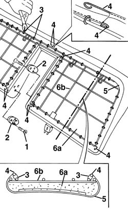
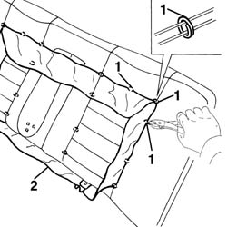

7050A24 Rear seat BACKREST COVER - R.R. with backrest removed
- Path
- Procedures > 70 FITTINGS > 7050 REAR SEATS > 7050A rear seat assembly > 7050A24 Rear seat BACKREST COVER - R.R. with backrest removed
- Kind
- repair procedure (removal / refitting; the operation number is the code)
- Applies to
- all engines; all production periods
- Interactive page
- https://sloeber94.github.io/elrnDB-a156/en/#/3238917
Applies to: all engines; all production periods
 Removing
Removing
 Refitting
Refitting7050B18 rear seat arm rest - r+r
1. Unscrew the screws.
2. Remove the hinges of the arm.
3. Cut the anchor rings of the cover to the chassis.
4. Pull out the rods.
5. Remove the cover from the border of the padding.
6. If necessary, separate the padding (6a) from the chassis (6b).

Applies to: all engines; all production periods
1. Cut the anchor rings of the cover to the padding.
2. Remove the cover.

Applies to: all engines; all production periods
Refitting
RemovingMake sure that the cover is complete and that is not damaged.
If removed, place the padding again.
Place the cover and seam the anchor rings with the proper tool to the padding.
 | Name | Country |
|---|---|---|
- | Pliers for metal points | 1.878.017.001 |
Place the cover on the border of the padding.
Insert the rods.
Seam the anchor rings of the cover to the chassis by using the proper tool.
Shape the cover on the padding.
Place the hinges of the arm again.
Screw the screws.